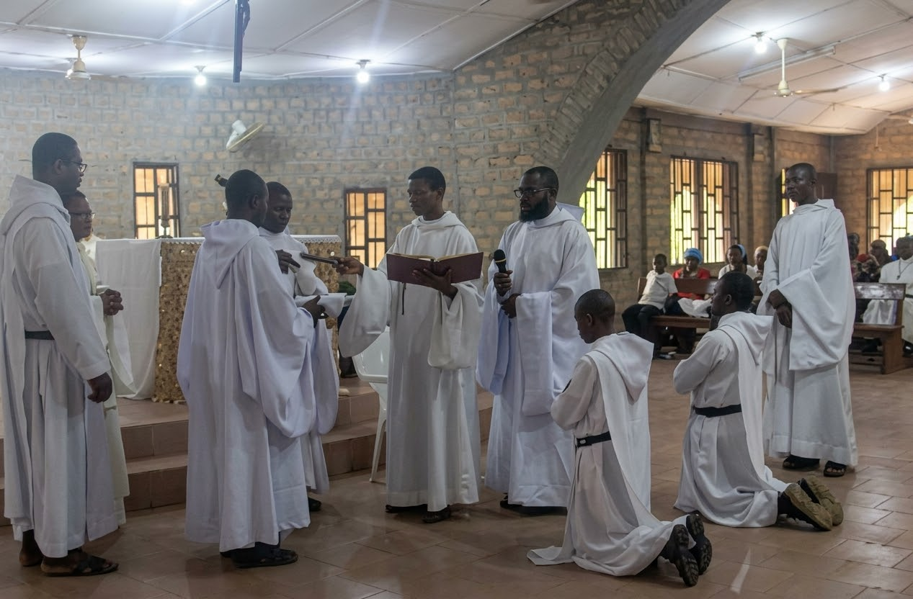

ST BERNARD BENEDICTINE MONASTERY
Iwuru Central, Akamkpa L.G.A., Cross River State, Nigeria
A warm and reverent welcome in Christ Jesus to all pilgrims, guests, and faithful visitors. Our Monastery is situated in a quite rural town of Iwuru and it offers a sacred refuge dedicated to prayer and spirituality.
ABOUT ST BERNARD BENEDICTINE MONASTERY

A Life of Prayer
United in prayer, the brothers seek God through the sacred liturgy and the daily rhythm of Benedictine monastic life.
We are a contemplative community of monks of the Order of St Benedict (OSB) . Called by God to live the Gospel in the cloistered tradition of Saint Benedict of Nursia, the monastic brotherhood is consecrated to a life of perpetual praise, intercessory prayer, humble manual work, and peaceful fraternal fellowship.
Following the ancient motto "Ora et Labora" (Prayer and Work), our daily rhythm is sanctified by the Divine Office and Holy Mass, alternating with intellectual study and farm labor to sustain our life of quiet dedication.
OUR HISTORY
THE CHRONICLE OF ST BERNARD BENEDICTINE MONASTERY
St Bernard Benedictine Monastery is a foundation of St Benedict Monastery in Ewu-Esan, Edo State. Were both of them are under the Annunciation Congregation of the Order of St Benedict.
Although the seed for the monastery was planted long before its official physical beginnings in the late 1990s and early 2000s. It first took root in the vision of Monsignor Francis Xavier Una, OSB, who was a diocesan priest before he move into monastic life in the 1990s. He drawing inspiration from Martha-Mary of Bethany to weave devotion and active service seamlessly together.
Over the years, our monastery has steadily evolved. Like any spiritual pilgrimage, our path has seen moments of expansion alongside quiet periods of inner reflection, marked by shared triumphs and trials alike.
Solar Power: For many years our monastery struggled with unreliable electricity from official grid, relying on torches, and generator which operation relied on expensive diesel/petrol. In 2026 however, with the support of benefactors and our Mother Monastery with the technical expertise of a trained monks, a solar power system was successfully installed, which is promising a more reliable supply of electricity to the community.
Through every season, our community has remained steadfast in its devotion to the Benedictine call. Today, our thriving brotherhood continues to grow through every stage of monastic formation, sustained by our enduring ties to our motherhouse, St Benedict Monastery in Ewu-Esan, Edo State.
MONASTIC VOCATIONS
"Hearken, O my son, to the precepts of thy master, and incline the ear of thine heart."
— Prologue, Rule of Saint Benedict
The Journey of Benedictine Discernment
Discerning a monastic vocation is a peaceful, patient process of listening to God's gentle invitation. It is founded upon regular prayer, spiritual direction, and an open heart willing to leave worldly preoccupations behind for the surpassing treasure of Christ.
Catholic men who feel drawn to a life of prayer, silence, manual labor, and community living under the Rule of Saint Benedict are welcome to inquire about visiting our monastery for discernment retreats.
Rev. Fr. Daniel OSB
Novice Master / Vocation Director
CONTACT US
For inquiries, and prayer intentions.
OFFICIAL LOCATION & MAP
MONASTERY LOCATION
St Bernard Benedictine Monastery
Iwuru Central, Cross River State, Nigeria
Email: Iwurumonastey@gmail.com
SEND A MESSAGE OR PRAYER INTENTION
Submitting this form will open your email client pre-addressed to Iwurumonastey@gmail.com.